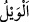
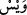
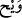

gibi çok çabuk gitmesine ve geçersiz hâle gelmesine delâlet etmektedir. Bu husus,
mecâzı terşih/açıklama ile kuvvetlendirmek için zikredilmiştir. Çünkü ruhun çıkıp
gitmesi ancak istiâre olunan şey için, yâni “ed-demğ”in asıl mânâsı için uygun olur.
Çünkü “dimâğ”, bütün hislerin toplanma yeridir. Baştaki yarık ona ulaştığı vakit canlı
ölür.
et-Te’vîlâtü’n-Necmiyye’de şöyle der: “Hakkın da bâtılın da üç mertebesi vardır:
Hakk’ın fiilleri mertebesi, Hakk’ın sıfatları mertebesi ve Hak Teâlâ’nın zâtı mertebesi.
Hakkın fiilleri, Allâh’ın kullarına emrettikleridir. Bunlarla, Allâh’ın yasak ettiği şeyler
demek olan bâtılın beyni parçalanır. Hakk’ın sıfatlarına gelince, onların tecellîleri ile
kulun sıfatları demek olan bâtılın canı çıkarılır. Hak Teâlâ’nın zâtına gelince; Allah zâtı
ile tecellî edince bütün zâtların bâtılını parçalar, yok eder. Nitekim Allah Teâlâ:
“O’nun zâtından başka her şey helâk olacaktır.” (el-Kasas, 28/88) buyurmuştur. “De
ki: “Hak geldi, bâtıl gitti; zâten bâtıl yok olmaya mahkûmdur.” (el-İsrâ, 17/81) âyeti
de aynı husûsa delâlet eder:
Herhalde “Ene’l-Hak” diyen, bu sözü ancak Hakk’ın zâtının tecellîsi sırasında
söylemiştir ya da O’nun Hak olma sıfatının kendi bâtıl olan zâtına tecellîsi sırasında
söylemiştir. Çünkü Hak geldiği zaman onun zâtının bâtıllığı gitmiştir. Böylelikle Hak,
Hakk’ın sıfatıyla muttasıf olan bir lisan ile kendi zâtından haber vermiş ve “Ene’l-Hak”
demiştir.
Mağribî (k.s.) şöyle der:
Nâsır (Allah) da Mansûr (Hallâc) da “Ene’l-Hakk” demekte
Bu sözü Nâsır’dan işit; bil ki bu söz Mansur’dan değildir
Hucendî (k.s.) ise şöyle der:
Bu fânî dünyada varlık cübbesini yakan kimse
“Sivallah” sırrının ne olduğunu bildi, “Enelhak” esrarını işitti
“Enelhak” esrarı çok ulu bir sözdür
Böyle bir sözün mânâsını sâdece darağacında bulursun
“(Allâh’a) yakıştırdığınız sıfatlardan dolayı” yâni Hak Sübhânehû ve Teâlâ’nın
şânına lâyık olmayan kadın ve çocukla, kelâmını da sihir, karışık rüyalar ve benzeri
bâtıl iddiâlarla vasfetmeniz sebebiyle “yazıklar olsun size!” Yâni ey müşrikler,
Allâh’a yakıştırdığınız sıfatlardan ötürü, artık sizin için helâk kesinleşmiştir.
Asmaî şöyle der: “__WORD__, kelimesi bir şeyin çirkinliğini ifâde etmek, bazen de üzüntü
bildirmek için kullanılır. “__WORD__ küçük görmek için, “__WORD__ ise merhamet ifade etmek için
kullanılır. “Veyl, cehennemde bir vâdidir.” diyen kimsenin sözüne gelince, o kimse bu